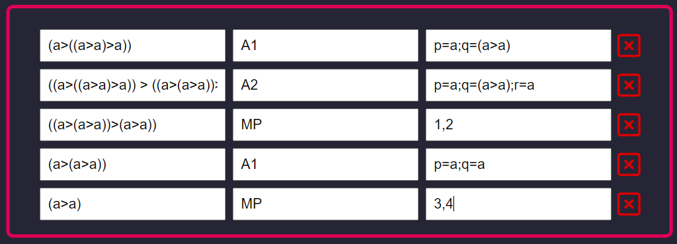

Como usar ⚠️
- Clique no botão de (+) para adicionar uma nova linha a sua fórmula.
- Você pode excluir uma linha clicando no [x] na frente da linha.
- Cada linha tem 3 colunas (inputs):
- No input "Instância" você fornece uma intância de axioma ou o resultado de um Modus Ponens.
- No input "Axioma" você fornece um axioma ou a string MP caso queira realiar Modus Ponens.
- No input "Substituição" vocÊ fornece a substituição para sua instânciação ou as linhas para MP.
- Depois que terminar de colocar a sua fórmula é só clicar em "Verificar" logo abaixo :)
Observações
- Sempre que fornecer uma instância ou substituição, você deve fornecer com todos os parentêses corretamente colocados, inclusive os parentêses mais externos.
- Pare fornecer um axioma, basta colocar "a" e o número do axioma. Ex.: A1, A2, A11, etc.
- Caso seja um Modus Ponens, basta apenas escrever a string "MP" no input de "Axioma".
- Para fornecer a substituição, você deve colocar o átomo que está sendo substituido, um sinal de igual e o valor da substituição e todas a substituições devem ser separadas por um ponto-e-vírgula ";". Ex: p=a;q=(a>a)
- Os simbólos proposicionais utilizados são ">" (implicação), "&" (conjunção), "v" (disjunção) e "¬" (negação).
Exemplo de utilização

Regras do método axiomático 📜
Axiomas

Modus Ponens